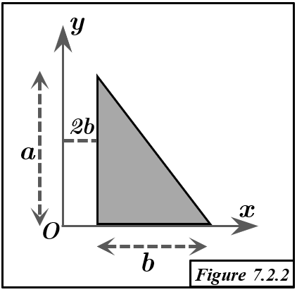

Solution Figure 7.2.2 : Triangle surfacique (CAB)

FIGURE 7.2.2 - Triangle surfacique C(2b,0), A(2b,a), B(3b,0)
Méthode : Deuxième Théorème de Guldin
- Principe : Le volume $V_{/\Delta}$ généré par la rotation d'une surface d'aire $S$ autour d'un axe $\Delta$ (ne la traversant pas) est $V_{/\Delta} = S \times (2\pi R_G)$. $R_G$ est la distance de G (centroïde de $S$) à $\Delta$.
- Objectif : Trouver le centroïde $G=(x_G, y_G, z_G)$ du triangle CAB. La surface étant dans le plan $z=0$, $z_G=0$.
Géométrie du Triangle CAB
- Sommets : C(2b,0,0), A(2b,a,0), B(3b,0,0).
- Description : Triangle rectangle en C.
- Côté CA (vertical) : le long de $x=2b$, de $y=0$ à $y=a$. Longueur $a$.
- Côté CB (horizontal) : le long de $y=0$ (axe Ox), de $x=2b$ à $x=3b$. Longueur $b$.
- Aire de la surface : $S_{CAB} = \frac{1}{2} \times \text{base (CB)} \times \text{hauteur (CA)} = \frac{1}{2} ba = \frac{ab}{2}$.
Calcul du Centroïde $G = (x_G, y_G, 0)$
1. Coordonnée $y_G$ (Rotation autour de l'axe Ox)
- Axe de rotation : Ox ($y=0$). Le côté CB du triangle est sur cet axe. Distance de G à Ox : $R_{G, Ox} = y_G$.
- Volume généré ($V_{/Ox}$) : La rotation du triangle CAB autour de Ox engendre un cône.
- Base du cône : Disque formé par la rotation du segment CA (rayon $a$) autour de Ox, situé dans le plan $x=2b$.
- Sommet du cône : Point B(3b,0,0).
- Hauteur du cône : Distance entre le plan de la base ($x=2b$) et le sommet ($x=3b$), soit $h_{cône} = 3b - 2b = b$.
- Calcul du volume du cône : $V_{/Ox} = \frac{1}{3} \pi (\text{rayon base})^2 \times (\text{hauteur}) = \frac{1}{3} \pi a^2 b$.
- Application de Guldin : $V_{/Ox} = S_{CAB} \times (2\pi y_G)$.
$$ \frac{1}{3} \pi a^2 b = \left(\frac{ab}{2}\right) \times (2\pi y_G) = \pi ab y_G $$
- Calcul de $y_G$ :
$$ y_G = \frac{\frac{1}{3} \pi a^2 b}{\pi ab} = \frac{a}{3} $$
2. Coordonnée $x_G$ (Rotation autour de l'axe Oy)
- Axe de rotation : Oy ($x=0$). Le triangle est à $x \ge 2b > 0$. Distance de G à Oy : $R_{G, Oy} = x_G$.
- Volume généré ($V_{CAB,/Oy}$) par décomposition de volumes de révolution :
- La droite passant par A(2b,a) et B(3b,0) a pour équation $y = -\frac{a}{b}(x-3b)$. Elle coupe l'axe Oy au point P(0,3a).
- Le volume $V_{CAB,/Oy}$ est obtenu par: $V_{CAB,/Oy} = V_1 - (V_2 + V_3)$.
- $V_1$ : Volume du cône généré par la rotation du triangle POB autour de Oy.
- Sommet P(0,3a) sur Oy. Base : disque de rayon $OB = 3b$ (dans le plan $y=0$). Hauteur $OP = 3a$.
- $V_1 = \frac{1}{3}\pi (3b)^2 (3a) = 9\pi ab^2$.
- $V_3$ : Volume du cylindre généré par la rotation du rectangle OCCA' autour de Oy, où O=(0,0) et A'=(0,a).
- Rectangle O(0,0)-C(2b,0)-A(2b,a)-A'(0,a).
- Rayon du cylindre $2b$. Hauteur $a$.
- $V_3 = \pi (2b)^2 a = 4\pi ab^2$.
- $V_2$ : Volume du cône généré par la rotation du triangle PA'A autour de Oy.
- Sommet P(0,3a) sur Oy. Base : disque de rayon $A'A = 2b$ (dans le plan $y=a$). Hauteur $PA' = 3a-a=2a$.
- $V_2 = \frac{1}{3}\pi (2b)^2 (2a) = \frac{8}{3}\pi ab^2$.
- Calcul du volume $V_{CAB,/Oy}$ :
$$ V_{CAB,/Oy} = V_1 - (V_2 + V_3) = 9\pi ab^2 - \left(\frac{8}{3}\pi ab^2 + 4\pi ab^2\right) $$
$$ V_{CAB,/Oy} = 9\pi ab^2 - \left(\frac{8+12}{3}\right)\pi ab^2 = 9\pi ab^2 - \frac{20}{3}\pi ab^2 $$
$$ V_{CAB,/Oy} = \left(\frac{27-20}{3}\right)\pi ab^2 = \frac{7}{3}\pi ab^2 $$
- Application de Guldin au triangle CAB : $V_{CAB,/Oy} = S_{CAB} \times (2\pi x_G)$.
$$ \frac{7}{3}\pi ab^2 = \left(\frac{ab}{2}\right) \times (2\pi x_G) = \pi ab x_G $$
- Calcul de $x_G$ :
$$ x_G = \frac{\frac{7}{3}\pi ab^2}{\pi ab} = \frac{7b}{3} $$
Résultat
Le centroïde G du triangle surfacique CAB a pour coordonnées :
$$ x_G = \frac{7b}{3} $$
$$ y_G = \frac{a}{3} $$
$$ z_G = 0 $$
Soit $G = (7b/3, a/3, 0)$.
Conclusion
- Le centroïde du triangle CAB est $G=(7b/3, a/3, 0)$.
- Ce résultat est cohérent avec la formule générale du centroïde d'un triangle (moyenne des coordonnées des sommets : $x_G = (2b+2b+3b)/3 = 7b/3$, $y_G = (0+a+0)/3 = a/3$).
- Le volume de révolution pour $x_G$ a été calculé par une décomposition astucieuse en volumes de cônes et cylindre standards.